❓ 它到底是什么？
- 一套正在开源共建的 3D 打印手部辅具。
- 它不是治疗工具，而是帮助把手指撑开一点、抓握稳定一点。
- 当前更像可测试原型，不是成熟医疗产品。
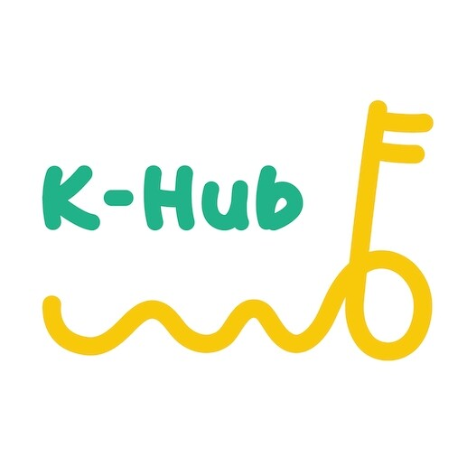
OpenHandAid🔓 Khub 开源项目 001
如果夹菜、拿杯、回消息这些小事越来越费劲，先别急着放弃。OpenHandAid 是一套可以打印、可以改、可以一起试的手部辅助方案，想帮手指多撑开一点，让日常动作多一点机会。
当前版本仍在迭代，不属于医疗器械，不替代医生、康复师或专业治疗建议。
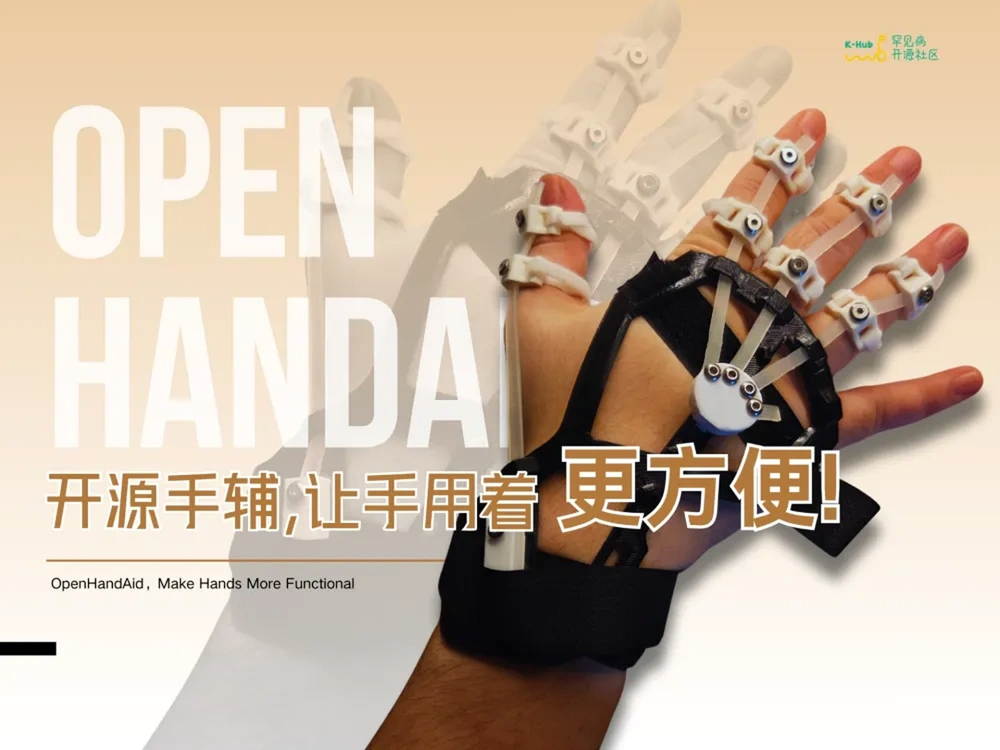
🧭 先问清楚
👥 我适合吗？

比如拿杯、拿筷子、打字、撑开手掌。不要一开始就期待它解决所有手部问题。
观察有没有压痛、勒痕、滑动、麻木或明显不适，记录是哪一个位置不舒服。
你的真实反馈会决定下一轮改结构、改材料、改尺寸，还是改佩戴流程。
不能。它只是尝试通过外部结构和弹力辅助，让某些轻量动作更容易尝试，不替代治疗和康复方案。
可以先了解模型和材料，但第一次佩戴不建议独自尝试。最好有人帮你观察松紧、压痛、皮肤状态和动作是否稳定。
出现疼痛、麻木、明显勒痕、皮肤破损、关节被强行牵拉，或者医生明确不建议佩戴外部辅具时，应停止使用。
🧪 现在做到哪了
当前开源版本已经能展示手指伸展辅助和部分日常动作辅助。它的目标是顺着使用者发力节奏，提供可调节的被动弹力辅助。
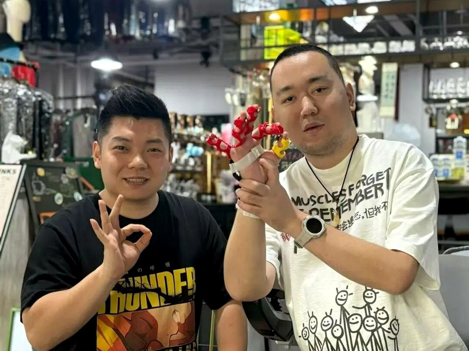
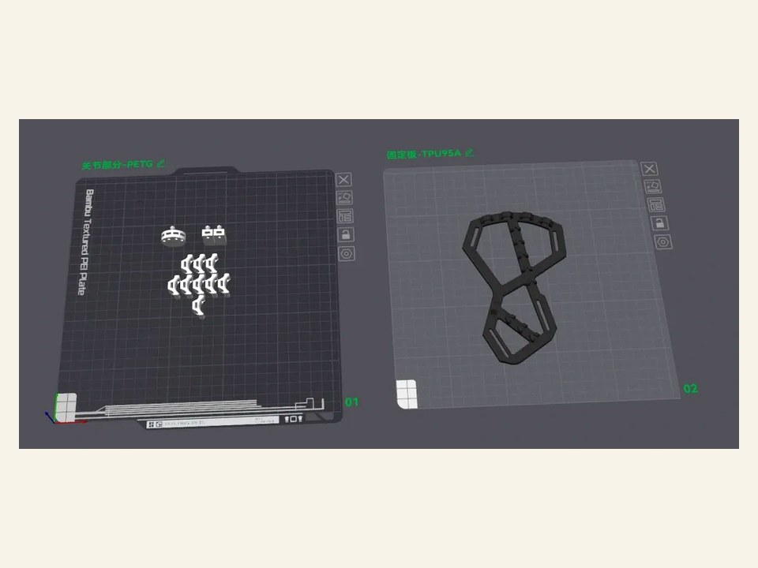

🎥 真实演示
🧤 佩戴前后对比
下面是两组真实试戴对比。重点不是承诺“治好”，而是看手指有没有多一点撑开的空间、动作有没有多一点机会。
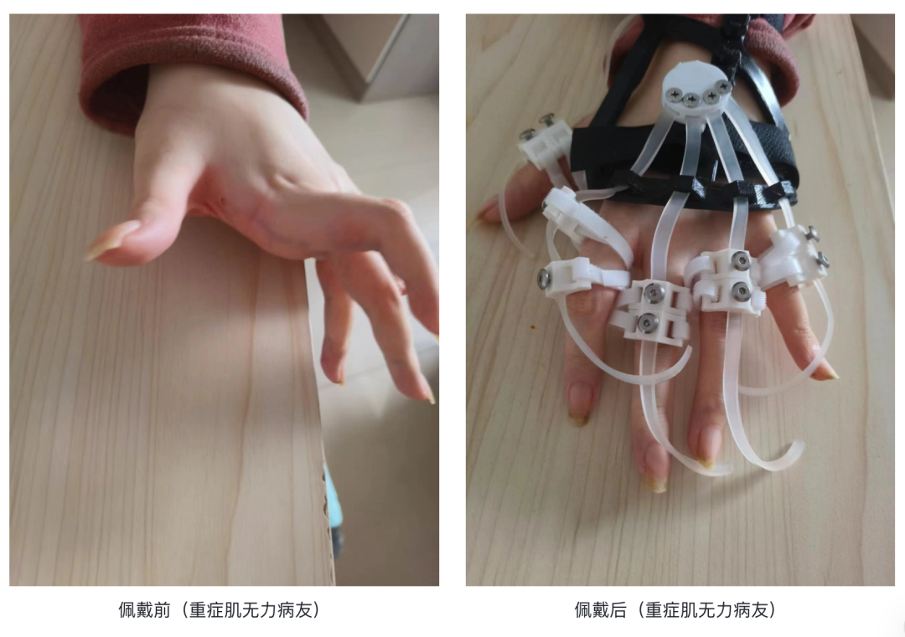
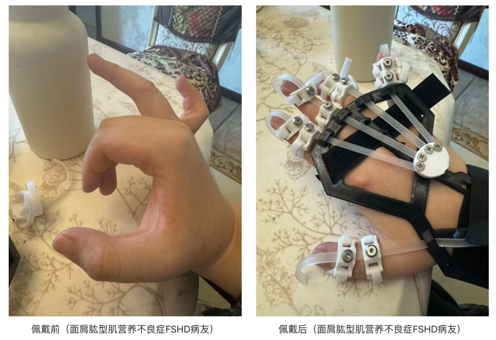
🧯 还差哪里
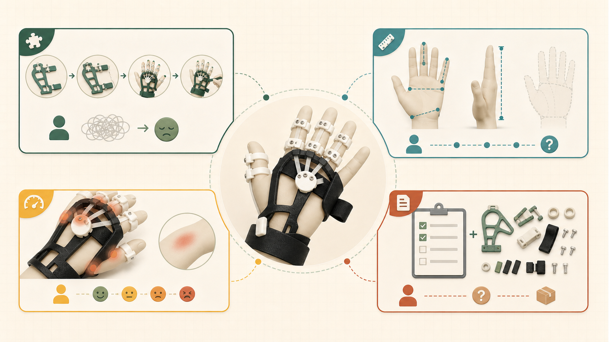
部分使用者仍可能需要家人协助完成佩戴和松紧调整。
手背宽度、手指长度、关节位置差异都需要更标准的测量和缩放规则。
硬质部件、弹力带和魔术贴可能造成压痛、勒痕或滑动。
物料清单、打印参数、组装步骤和常见问题需要整理成稳定文档。
🌿 开源路线图
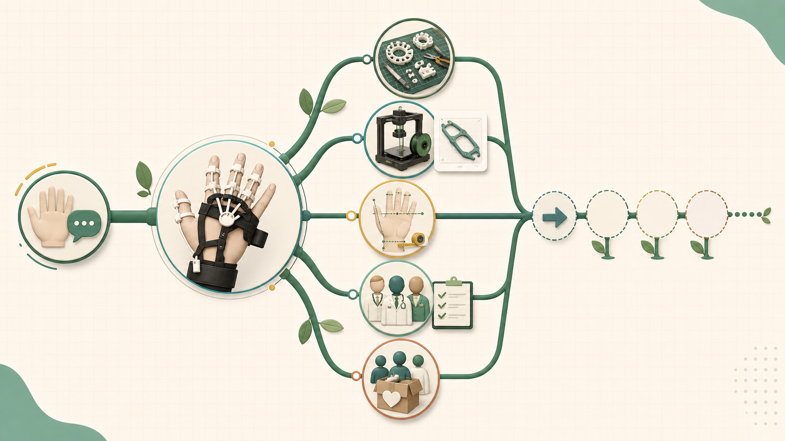
导角、包覆层、柔性材料、局部压痛优化。
减少魔术贴步骤，让患者更容易独立佩戴。
建立手掌宽度、手指长度、手背结构的测量规则。
测试 TPU、PETG、硅胶包覆、弹力带替代方案。
完善物料清单、打印参数、组装教程和常见问题。
线控、电控、肌电等方向，但不能明显增加使用负担。
把手背宽度、指长、关节位置转成更容易调整的模型参数。
减少绑带步骤，让单手能力受限的使用者更少依赖他人协助。
记录 PETG、TPU、包覆层、弹力件在舒适度和耐用性上的差异。
补齐打印摆放、支撑、组装步骤、试戴检查和常见问题。
🧰 怎么用？
当前公开版本已放在 MakerWorld，可先从这里下载模型并查看页面说明。
进入 MakerWorldGitHub 会逐步沉淀物料清单、教程、版本日志和问题反馈，方便后续共建。
进入 GitHub先把螺丝、魔术贴、橡胶圈和工具规格对齐，能减少复现时反复试错。
看要准备什么后续会补齐 PETG / TPU95A 的喷嘴、层高、填充、支撑和摆放方向建议。
后续会把打印件清理、穿魔术贴、上螺丝和安装橡胶圈拆成步骤图。
当前已有筷子夹取演示，后续还会补充拿杯、打字、使用手机等场景。
查看演示📦 基础物料
下面列出当前原型需要准备的小件、用途和入口。数量先按一套可演示原型估算，后续会随组装教程继续校准。
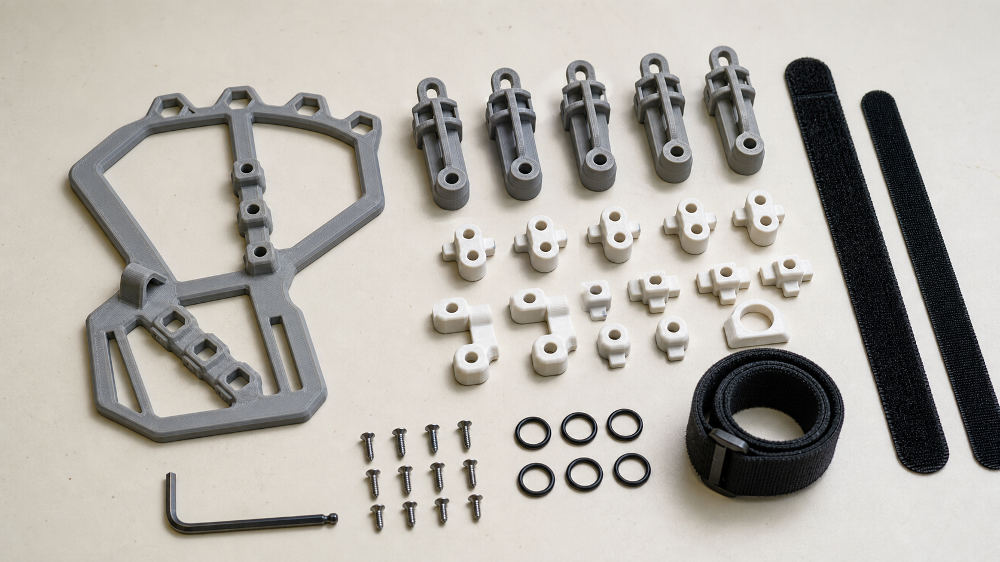
打印志愿者最容易卡住的不是模型下载，而是小件规格、裁剪位置和备用数量。这里把“买什么、用在哪里、准备多少”拆开。
倒边内六角螺丝 M3x5
勾毛同体魔术贴 2cm
勾毛同体魔术贴 0.5cm
球头 2mm
对折 7.5cm，宽 5mm
手背框架、指节件、绑带连接件
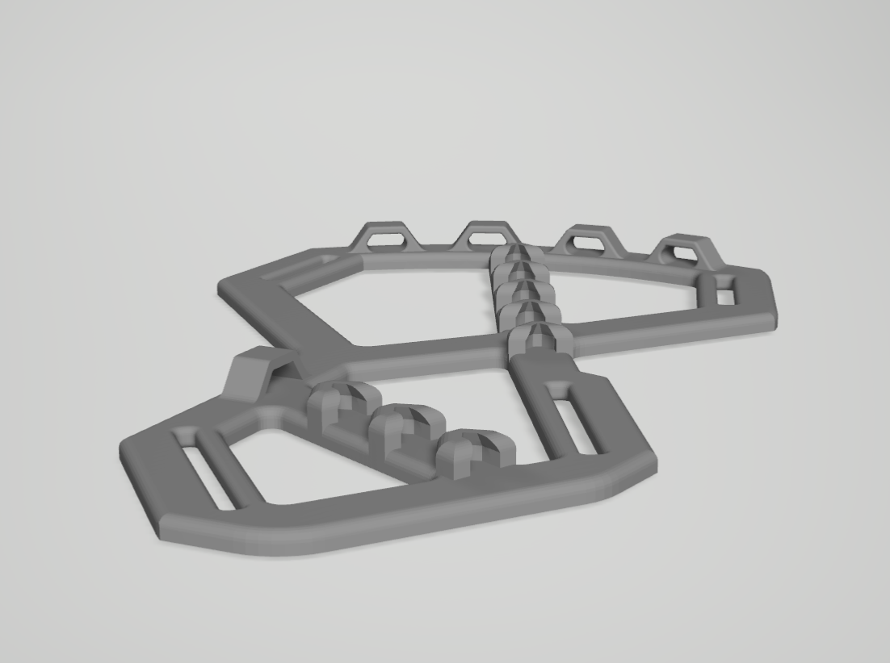
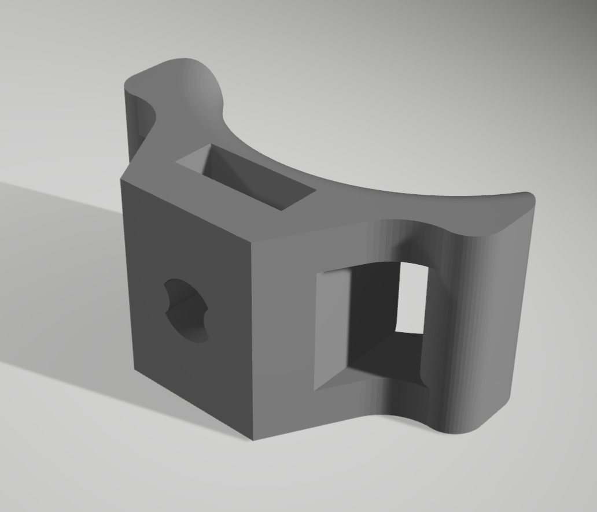
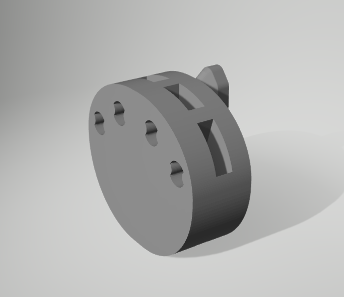
🗓️ 项目进展
📣 下一步去哪里
不用翻聊天记录，也不用先懂技术。想看故事、下载模型、提交反馈或一起改进，都有对应入口。
想知道这个手辅为什么会出现、它最初想回应什么需求，可以先看完整项目故事。
后续版本、测试招募和共建消息会继续更新。
会 3D 打印的伙伴，可以先从模型页开始复现，再把遇到的问题反馈回来。
下载模型结构、材料、尺寸、文档、测试反馈都可以继续往仓库里沉淀。
参与改进这个项目最需要的不是一句“很好”，而是更具体的真实情况：哪个动作卡住、哪里勒、哪里滑、哪一步装不上。
说清楚想完成哪个动作，以及现在卡在什么地方。
把模型打印出来，记录支撑、材料、螺丝和组装问题。
帮忙改尺寸参数、材料方案、佩戴流程和复现文档。
支持打印、材料、测试组织和病友家庭对接。
💬 真实反馈
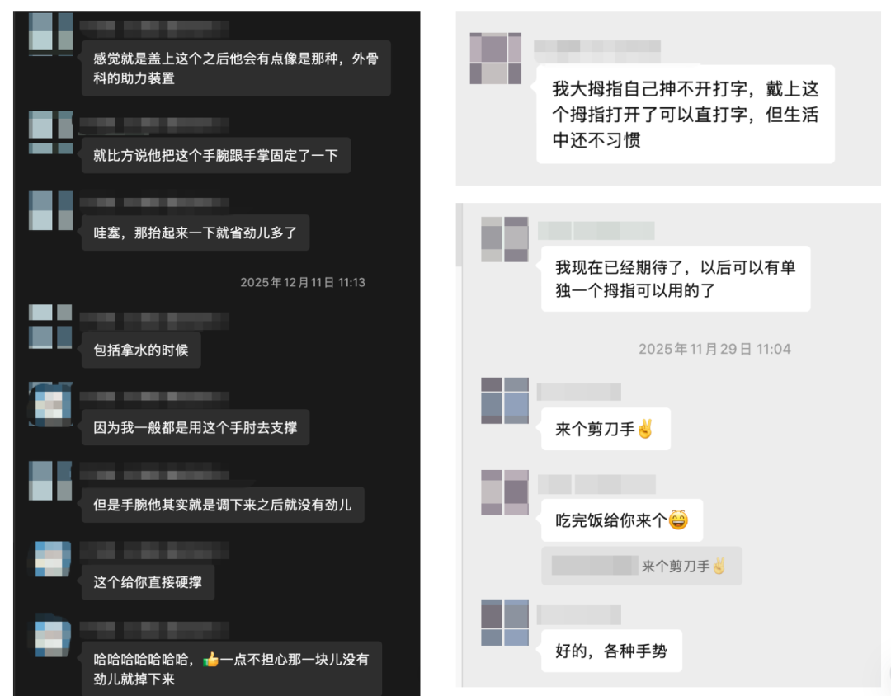
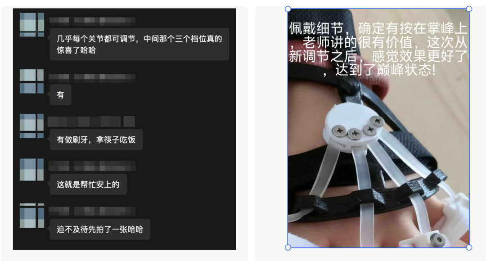
🧭 谁在接力
完成从需求理解到可用原型的早期探索，让项目有了第一批可复现材料。
接力围绕结构舒适度、尺寸适配、材料替代和康复应用场景继续迭代。
项目需要更多打印复现、使用反馈、文档整理和公益资源一起补齐。
🤝 我也想参与！
这里暂时不放临时个人二维码，避免大家跑错入口。等 Khub 确认统一表单、小助手和分流规则后，会在这里放正式入口。
提交手部使用困难、希望改善的动作、手型信息和测试意向。
帮助复现当前版本，反馈打印问题，支持病友家庭制作。
参与结构、材料、康复、人机工程、文档和开源流程优化。
GitHub：open-hand-aid支持材料、打印、物流、测试组织和病友家庭定向制作。